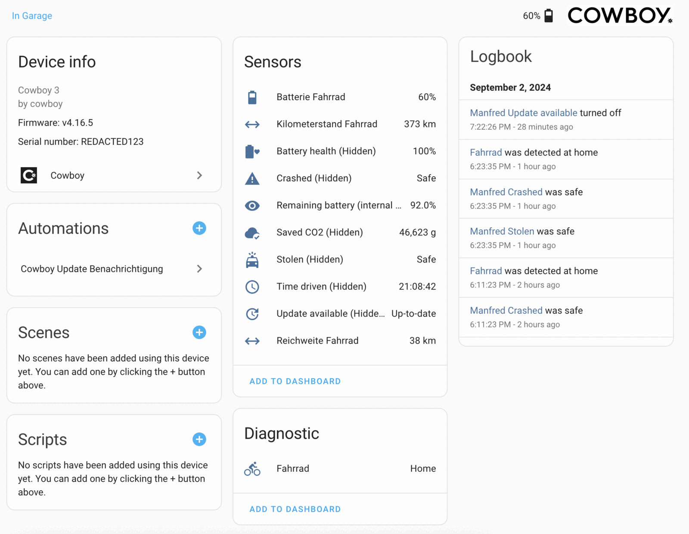

Battery
0%
cowboy-ha pulls your Cowboy e-bike into Home Assistant as a real device — battery, range, mileage, trips, crash and theft state, GPS position and firmware, all as native entities you can chart, template and automate against.
One device per bike, grouped the way Home Assistant groups it. Names follow your HA language; the keys below are what you'll find in the source.
sensorRide & batterysensorTripsbinary_sensorStatedevice_tracker updatePosition & firmwaresensorDiagnosticA normal device page — no custom cards required. Everything is a standard entity, so the logbook, history, statistics and voice assistants pick it up for free.

Device page from a live install. Entity names follow the Home Assistant language setting.
Three minutes, no YAML. The integration ships in the default HACS catalog, so there's no custom repository to add.
In HACS → Integrations, search for Cowboy and download it. Then restart Home Assistant.
Rather do it by hand? Copy custom_components/cowboy into your config directory — the README has the commands.
Settings → Devices & services → Add integration → Cowboy. Enter the email and password of your Cowboy account.
The bike shows up as its own device with every entity attached. Nothing else to configure.
Everything is a plain entity, so ordinary triggers, templates and history graphs work — no special handling anywhere.
For example, a nudge when the battery runs low:
# Tell me before the bike is flat
triggers:
- trigger: numeric_state
entity_id: sensor.otto_remaining_battery
below: 20
actions:
- action: notify.mobile_app_phone
data:
message: "Charge the bike — {{ states('sensor.otto_remaining_range') }} km left"
The honest small print — how credentials are handled, what happens with more than one bike, and how often it talks to Cowboy.
Cowboy keeps only the last 10 sessions per account. Signing in on every Home Assistant restart used to push your phone out of that list and log you out of the app, so the session is stored and reused instead.
It stays valid for about a year. If it expires or is rejected, the integration signs in again by itself and only asks you for credentials if that fails too.
The password is kept in the config entry so the session can be renewed without you. It isn't used for anything else, and nothing is sent anywhere except Cowboy's own API.
Removing the integration logs the session out. Restarting Home Assistant does not.
Cowboy requires one account per bike, so households with two bikes have two logins. Add the integration a second time with the other account's credentials — each bike becomes its own device with its own entities.
Bike data is polled every minute by default, adjustable from 1 to 60 minutes in the integration options. Firmware releases are checked hourly.
Firmware is reported, not flashed — the update entity tells you what's available; installing still happens in the Cowboy app.
Once the entities exist, anything that speaks to Home Assistant can use them. Things other people have made:
A drop-in custom-api widget for Glance that renders these entities as a dashboard card — battery bar, mileage, time driven, and optional status rows for security, crash and firmware.
Made something? Open an issue and it can go here.